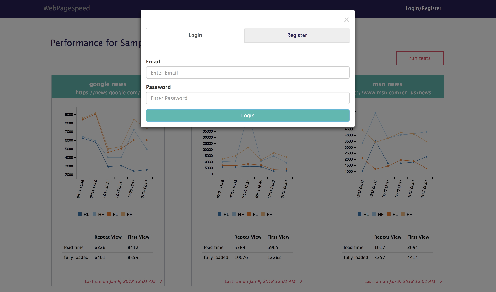
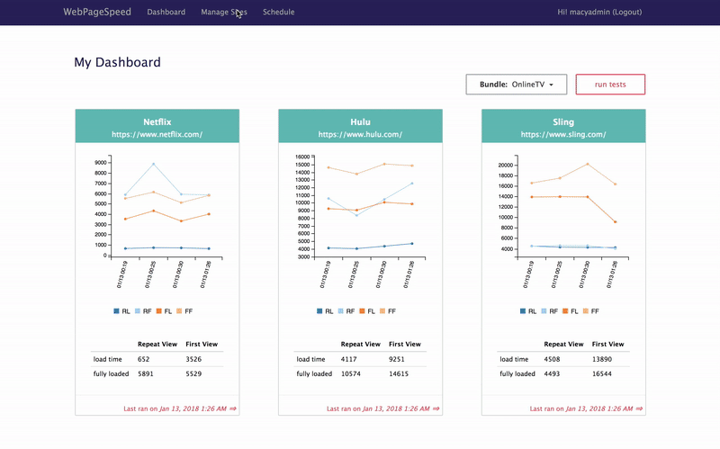
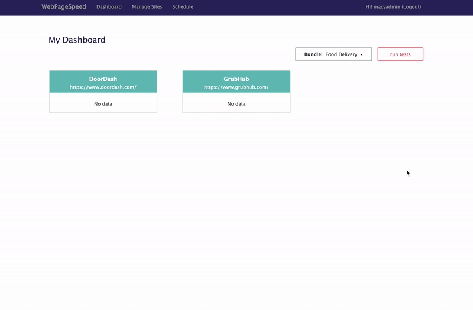
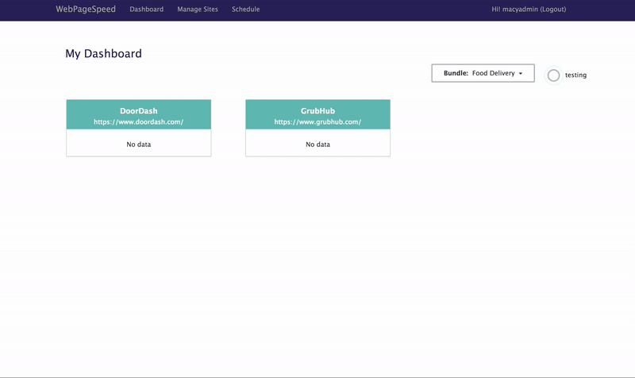
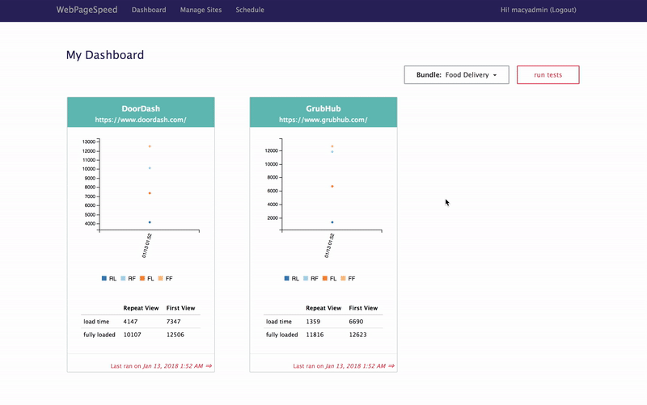

WebPageSpeed
Why I build WebPageSpeed
Many companies measure web performance using webpagetest, a tool being developed by Google. After each release, engineers will go to webpagetest.org, enter the URL, click start test, wait for the test to finish, then record the number on an excel sheet. If a company has multiple websites, this process has to repeat several times for each release. It requires a lot of manual effort and the data in the excel sheet could be more useful if we can visualize it.
WebPageSpeed is a test management system that will run the performance tests for all your websites and record the data for you with one click. It also provides a dashboard for you to visualize the load time history.
How does WebPageSpeed work
(1) Sign up or login
(2) Create a bundle that includes the website urls that you want to do performance testing
(3) Go to dashboard, select the bundle, click run tests
(4) When tests completed, page will refresh with result
(5) Click the bottom of the card to see more details
(6) Click the Summary Url arrow to go to webpagetest page to see detail breakdown